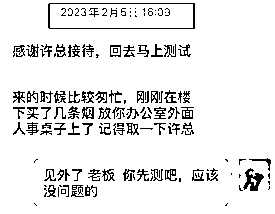
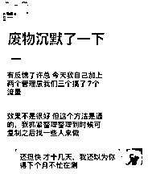
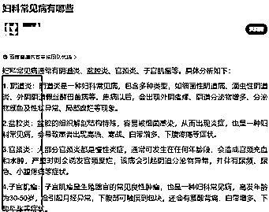
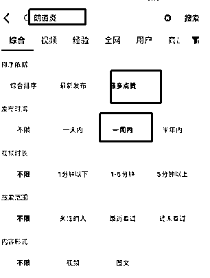
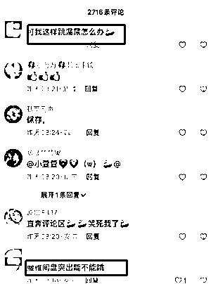
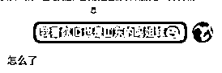
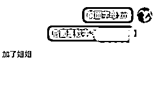

来源：https://srlk36049t.feishu.cn/docx/JsWydjTNkoW9FmxWVA6cZ7KdnPh
分享案例：
测试项目：妇科中药
目前成果：月变现30万，流量成本节省70%
测试周期：测试用时2个月
获客平台：抖音
团队人数：12+7（12个负责转化 7个负责流量）
账号数量：86个
获客方式：AB话术截流
今天主要给大家去详细分享一下流量玩法，这个主要适合高客单和高利润转化产品，不适宜泛粉流量，直接上干货（中途有点干 不参杂玩法之外内容 请备水）
目录：
1：基于什么原因做的短视频流量
2：A B话术 的引流落地流程拆解
3：实操引流过程中会遇见的问题
一：基于什么原因做的短视频流量
因为我们一直在做流量变现，所以一直遵守什么流量产值大去做什么流量，所以有了后来的朋友来线下交流，他们本身也是做男科产品和转化，只不过去年一直在做大搜投放，和矩阵的铺号作品引流
但今年相信大家会明显的感觉到矩阵的风控力度比之前大了很多，尤其这些禁止的行业，在说大搜，现在的一个流量成本基本在200+ ，12个销售每天一个销售3个客咨3*12=36，一天需要35-40个客户资源，按照传统大搜一个流量成本200计算一天流量成本7200元，成本还是级高的，目前调整之后是七个客服全职做流量，一个人一天8-12个客户不等，7*8=56，目前进粉基本稳定在55-85左右，但一天的成本只需要7*100（薪资）700元加上账号损耗一天不超过1500，一天流量成本合计也就20多块钱，比之前节省不是一点半点，就算后续加上社保等杂七杂八支出，流量成本节省至少70%是有的
当时交流也是聊到这里之后，开始有的明显触动，在试错成本不高，但回报级高的基础下，朋友回去之后就直接开始了实操上阵；
基于高客单产品以及流量成本级高的团队来讲，这个玩法应该是人人都可以，只不过是一个铺人工的过程而已


二：A B话术 的引流落地流程拆解
前言：什么叫AB话术引流
其实换句话讲就是两个人设去对话，通过对话完成引流，拿妇科来讲，我们的操作是每个人包装出10个抖音小号，包装成30岁宝妈，通过这个抖音号去妇科类视频下面找一些有妇科病症的用户，进行主动关注和私信，宝妈一般都会比较喜欢聊天的，在抖音聊天过程中我们会提到我们在老家哪里拿药调理的最后好了，然后在引导用户加到宝妈微信，通过宝妈微信去在推荐销售的名片。
这样讲估计大家都可以理解了这个意思，但需要注意的是一定不要包装成老师或者医生的账号，这样回复率极地，另外不要在抖音直接发销售的微信，那样太明显了，先加宝妈微信还有一个很重要的原因是后期宝妈这个微信可以配合踢单。
大体意思理解后，下面给大家写一下详细的操作步骤；抖音账号包装—如何去找客群—如何和用户破冰—如何引导微信
1：抖音账号包装
第一步也是很重要的一步，你账号包装的太营销回复率就会很低，所以我们一定要包装的真实一些：
账号名称：搜索一些女生经常会用的网名即可，小红书搜索会出来很多
账号头像：建议真实一些，可以在微博同城去看一下，找个还算漂亮的女生头像（哪怕是女生也喜欢和漂亮的女生聊天）
账号作品：账号一定要更新一些作品，带娃的视频，或者自拍旅游，家人聚会等等，正常用户喜欢发的就是我们要发的
账号签名：写一些30岁左右女生喜欢用的签名就可以，但一定要真实不要太高大上让人不易看懂，比如“ 一个宝宝的妈妈 视频只是记录生活 ”“ 越长大 越孤单 ”等等
2：如何去找客群
目前主要是抖音在做，我们拿抖音举例，这个客群能不能找好，直接关系后面的转化效果，根据行业不同去锁定关键词，拿妇科举例，我们可以先确定一些关键词再去搜搜，首先先确定下妇科常见的一些病症，根据这些病症做为关键词

直接在抖音搜索关键词，选择最多播放，近七天内，会出现大量最近发布的关于关键词的视频

这个时候我们去点开作品，去寻找我们的精准客户，在评论区可以分析出来很多和自己产品匹配的需求客户，但需要注意的是评论留言超过一天的就不需要私信了，回复率比较差，找一些评论留言不久的主动给他点关注并私信

3：如何和客户破冰
这一步很关键，因为你开头第一句回复不好就不会有后续，我们一般是打招呼的形式来聊第一句，例如“ 我看你id也是山东的吗姐妹 ” “刚刚看你评论 你现在也是阴道炎吗姐妹，我也是都好久了 哎 ，你现在怎么调理啊”

注：流程是先关注用户，在私信，私信只发一条，客户没回复之前无需在二次发送其他话术，测出一套回复率高的开头语即可，一天一个号只发80-100条消息即可，每隔半个小时发5-8条。
4：如何引导加微信
沟通过程中后面肯定会引导至我们客户加微，我们一般钩子是，我在老家那个中医那正在拿药调理效果还不错，或者已经康复，要么我推你一下，这个时候在加到宝妈微信上，发联系方式太多会被检测，我们微信基本全是字母+数字，发送时我们会按照这个格式来发。

加到微信之后简单闲聊一下一般就会给他去推销售微信名片，宝妈微信朋友圈也需要平常维护一下，简单包装，让客户对你留下好感，后面销售转化踢单踢不动时宝妈ip可以辅助一下。
三：实操引流过程中会遇见的问题
1：账号问题怎么解决
这个封号不是特别厉害，最多就是封禁言，除非有人举报，所以直接用员工去办手机号即可，一个营业厅五张。
2：需要注意的一个地方
现在抖音检测挺厉害的，私信多了有时候不封但需要你实名，跳核对，这个我们一般是找代实名来完成，市场价60左右
3：客户群体如果太少怎么办？
很多特别垂直细分的领域，客户确实会少，这个时候就要不断去扩大自己的关键词的信息量，关键词越多客户群体越多
暂时先写这么多吧，希望可以给各位朋友在灵感上可以提供一些思路，因为我本身做了将近四年流量，对流量可能想法和经验更多一些，所以没去写具体的转化，这个可能更适合本身就有高客单产品的朋友阅读，欢迎搞流量的朋友一起交流